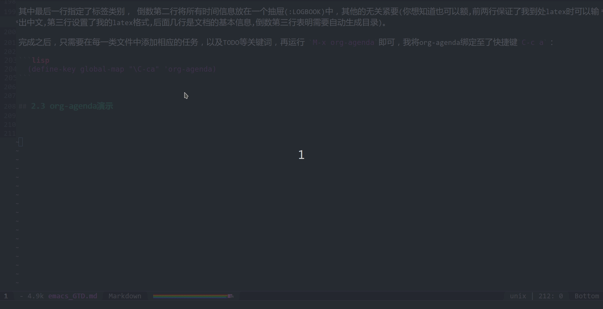
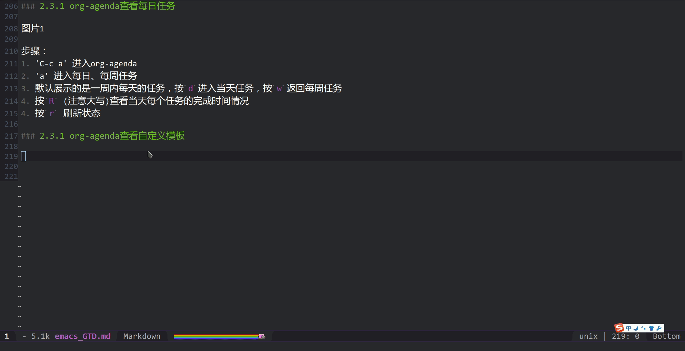
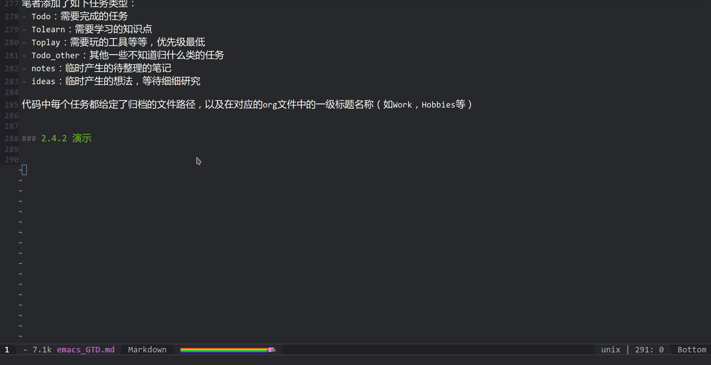

[MIGRATE]利用Emacs进行个人时间管理(GTD)
Table of Contents
1 简介
1.1 什么是GTD
Get Things Done(GTD)，是一套时间管理方法，面对生活中如下情况：
- 有很多事情要做
- 每件事情有主次之分
- 个人精力有限
我们需要随时很方便的了解我们下一步要做什么，合理的安排我们有限的时间，集中精力完成更重要的事情。
GTD通过帮助你更好的跟踪和管理你的思绪、需要做的和想做的事，从而使你能在合适的情境中静下心，集中精神完成最重要的任务。
GTD不是一蹴而就的。GTD是一套持续的系统，需要不断地实践才能让你更好的掌握，从而成为你信任的系统。
GTD原则：
- 收集
- 处理
- 管理
- 执行
- 回顾
1.2 什么是Emacs
Emacs是一款开源跨平台的编辑器，功能非常之强大，参见陈斌大神的 《一年成为Emacs高手(像神一样使用编辑器)
而借助丰富的插件，Emacs可以说是目前最为强大的GTD工具没有之一， 本文将重点介绍拿到Emacs后如何配置为一个可以用的GTD系统 。如果你想知道一些详细的Emacs-GTD方法，见 用Org-mode实现GTD 。
1.3 什么是番茄工作法
说道GTD一定要提番茄工作法，番茄工作法的核心是 专注 ，具体做法是：
- 设定番茄钟，一个番茄钟包括了25分钟持续工作时间和5分钟休息时间
- 对每项任务估计番茄钟数目
- 在番茄钟的25分钟工作时间，强迫自己必须极其专注，放弃手机、知乎、微信等等
- 在番茄钟的5分钟休息时间，翻看微信消息、邮件等
- 如果有3分钟内能解决的事情，立马解决
- 如果需要较多时间解决，则加入GTD代办事项
2 Emacs Org-mode 的GTD配置
笔者使用的环境是：
- Manjaro 17.1.10
- Gnome 3.28.2
- Emacs 25.3.1
- Spacemacs 配置文件
2.1 Org Agenda
2.1.1 添加Agenda路径
我们Emacs做GTD工具的核心功能就是Agenda功能，他是一个可以实时查看自己有哪些任务，以及每个任务完成进度的功能，我们可以通过 M-x org-agenda 来打开，也可以自定义快捷键（我的是 C-c a ，借助 (define-key global-map "\C-ca" 'org-agenda) ），不过首先你需要建立一个专门存放你的GTD文件的目录，并且将 org-agenda 的目录指定为该目录。
笔者使用的是Spacemacs配置，因此需要在 .spacemacs 文件中的 dotspacemacs/user-config 函数中加入如下命令：
(setq org-agenda-files '("/Path/To/Your/GTD/File/"))
2.1.2 自定义agenda模板
打开agenda可以发现，当前仅有自带的几个展示途径：
- 列出每天、每周的Agenda
- 列出所有TODO事项
- 按Tag搜索
- 按关键词搜索
- 。。。
我们可以添加一些展示的模板进去，这里参考 子龙山人 在 [Spacemacs Rocks](http://v.youku.com/v_show/id_XMTM2MjM5OTU5Ng==.html?spm=a2hzp.8253869.0.0.DqiSC6&from=y1.7-2)的配置方法，将任务按照不同的级别进行展示：
(setq org-agenda-custom-commands
'(
("w" . "任务安排")
("wa" "重要且紧急的任务" tags-todo "+PRIORITY=\"A\"")
("wb" "重要且不紧急的任务" tags-todo "-weekly-monthly-daily+PRIORITY=\"B\"")
("wc" "不重要且紧急的任务" tags-todo "+PRIORITY=\"C\"")
("W" "Weekly Review"
((stuck "") ;; review stuck projects as designated by org-stuck-projects
(tags-todo "project")
(tags-todo "daily")
(tags-todo "weekly")
(tags-todo "school")
(tags-todo "code")
(tags-todo "theory")
))
))
其中的指令其实很好理解，比如：
- ("w" . "任务安排") 表示了设置快捷键"w"展示任务安排
- ("wa" "重要且紧急的任务" tags-todo "+PRIORITY=\"A\"") 表示设置快捷键 "wa"展示重要且紧急的任务，筛选条件是 优先级等于"A"
- ("wb" "重要且不紧急的任务" tags-todo "-weekly-monthly-daily+PRIORITY=\"B\"") 筛选条件是：排除每周、每月、每日标签、且优先级等于B
- ((stuck "") 表示显示尚未进行管理的任务
- 下面的"project", "daily"表示展现该类标签下的任务
2.2 添加Agenda目录下的.org文件
2.2.1 ORG文件简介
Emacs org-mode常用来进行富文本写作，非常的强大，我目前觉得相对于Markdown最有优势的地方是：
- 结构可展开和收缩，非常清晰
- 代码块功能，直接文本内运行（我承认有些md插件也行，但是没这个好用）
- latex公式，渲染非常漂亮，行内显示
- 导出方便且类型多样
- 所有继承自Emacs的优点
2.2.1.1 任务关键词
用.org文件可以进行很方便的GTD，他的正文可以添加每个任务的 关键词标注 ，比如TODO表示将要做，DONE表示做完了等，快捷键是 C-c C-t ，我们可以在init.el文件中添加如下命令来自定义关键词：
(setq org-todo-keywords
'((sequence "BUG(b!)" "|" "FIXED(f!)")
(sequence "TODO(t!)" "SOMEDAY(s)" "|" "DONE(d!)" "CANCELED(c @/!)")
))
可以在 () 中定义附加选项,包括:
- 字符:该状态的快捷键
- ! : 切换到该状态时会自动添加时间戳
- @ : 切换到该状态时要求输入文字说明
- 如果同时设定@和!,使用@/!
你也可以通过 S-左方向键 和 S-右方向键 进行调整，S表示super键，即shift键
2.2.1.2 任务优先级
其次，他还可以添加每个任务的优先级， 上文中展示了A B C三个优先级，你可以通过 S-UP/DOWN 来进行调整
2.2.1.3 子任务完成情况
在每级标题后插入 [%] 或 [/] 即可追踪其子标题的完成情况，前者表示任务完成百分比，后者表示完成进度，当任务发生变化时，该值也会跟着改变
2.2.1.4 插入时间戳
ORG中你可以对每个任务插入时间戳， C-c C-s 插入Schedule时间， C-c C-t 插入Deadline时间, 或者直接 C-c . 插入一般时间。
时间戳中可以添加具体时间，如：
也可以添加时间范围，如：
-
也可以添加需要重复的时间，如：
分别表示每天重复和每周重复一次
2.2.1.5 一个例子
下面是一个简单的例子，包括了主任务，子任务，子任务状态，子任务优先级，子任务deadline，主任务完成进度，以及每个状态的修改时间
* TODO Work[1/3] - State "TODO" from "" [2018-05-29 二 09:51] ** TODO [#B] 代办事项1 :school: DEADLINE: <2018-06-10 日> - State "TODO" from "FIXED" [2018-05-28 一 23:28] - State "FIXED" from "TODO" [2018-05-28 一 23:28]
2.2.2 ORG文件与GTD
Org-mode是所有事项的文本载体，Agenda从其中进行读取、归档、汇总、统计。我在我的GTD文件夹中添加了如下的.org文件:
- task 用来存放临时的任务
- calendar 用来存放每日，每周， 每月固定的任务
- notes 用来存放平时记得一些笔记，等待归档
- finished 用来存放已经完成的任务
- canceled 用来存放已经取消的任务
org-mode的配置可以在头文件中实现 以task为例，我的org头文件如下：
#+LATEX_HEADER: \usepackage{xeCJK}
#+LATEX_HEADER: \setmainfont{"微软雅黑"}
#+ATTR_LATEX: :width 5cm :options angle=90
#+TITLE: Task
#+AUTHOR: 杨 睿
#+EMAIL: yangruipis@163.com
#+KEYWORDS: GTD
#+OPTIONS: H:4 toc:t
#+PROPERTY: CLOCK_INTO_DRAWER t
#+TAGS: { code(c) theory(t) school(s) easy(e) project(p) }
其中最后一行指定了标签类别， 倒数第二行将所有时间信息放在一个抽屉(:LOGBOOK)中，其他的无关紧要(你想知道也可以额,前两行保证了我到处latex时可以输出中文,第三行设置了我的latex格式,后面几行是文档的基本信息,倒数第三行表明需要自动生成目录)。
完成之后，只需要在每一类文件中添加相应的任务，以及TODO等关键词，再运行 M-x org-agenda 即可，我将org-agenda绑定至了快捷键 C-c a ，下面是一个org-agenda演示。
2.3 org-agenda演示
2.3.1 org-agenda查看每日任务

步骤：
C-c a进入org-agendaa进入每日、每周任务- 默认展示的是一周内每天的任务，按
d进入当天任务，按w返回每周任务 - 按
R(注意大写)查看当天每个任务的完成时间情况 - 按
r刷新状态
2.3.2 org-agenda查看自定义模板

步骤：
C-c a进入org-agendaw进入自定义的模板a选择优先级为a的任务列出C-c a,wb选择优先级为b的任务列出C-c a,W(大写)列出所有模板中的代办任务
2.4 org-capture配置
2.4.1 如何配置
我们经常会遇到一些临时产生的任务、安排、想法等等，我们需要以最快的方法将其添加到我们的GTD系统中去，而 org-capture 提供了这个功能。
你可通过 M-x org-capture 打开，也可以绑定快捷键，我是 C-c c 。打开后可以发现，默认可以添加的任务类型非常少，我在配置文件中加入了：
;; 绑定键位 (define-key global-map "\C-cc" 'org-capture) ;; 这边就是为路径赋值 (defvar org-agenda-dir "" "gtd org files location") (setq-default org-agenda-dir "/Path/To/Your/GTD/File/") (setq org-agenda-file-note (expand-file-name "notes.org" org-agenda-dir)) (setq org-agenda-file-task (expand-file-name "task.org" org-agenda-dir)) (setq org-agenda-file-calendar (expand-file-name "calendar.org" org-agenda-dir)) (setq org-agenda-file-finished (expand-file-name "finished.org" org-agenda-dir)) (setq org-agenda-file-canceled (expand-file-name "canceled.org" org-agenda-dir)) ;; 添加每次打开时可添加的任务类型 (setq org-capture-templates '( ("t" "Todo" entry (file+headline org-agenda-file-task "Work") "* TODO [#B] %?\n %i\n" :empty-lines 1) ("l" "Tolearn" entry (file+headline org-agenda-file-task "Learning") "* TODO [#B] %?\n %i\n" :empty-lines 1) ("h" "Toplay" entry (file+headline org-agenda-file-task "Hobbies") "* TODO [#C] %?\n %i\n" :empty-lines 1) ("o" "Todo_others" entry (file+headline org-agenda-file-task "Others") "* TODO [#C] %?\n %i\n" :empty-lines 1) ("n" "notes" entry (file+headline org-agenda-file-note "Quick notes") "* %?\n %i\n %U" :empty-lines 1) ("i" "ideas" entry (file+headline org-agenda-file-note "Quick ideas") "* %?\n %i\n %U" :empty-lines 1) ) )
笔者添加了如下任务类型：
- Todo：需要完成的任务
- Tolearn：需要学习的知识点
- Toplay：需要玩的工具等等，优先级最低
- Todo_other：其他一些不知道归什么类的任务
- notes：临时产生的待整理的笔记
- ideas：临时产生的想法，等待细细研究
代码中每个任务都给定了归档的文件路径，以及在对应的org文件中的一级标题名称（如Work，Hobbies等）
2.4.2 演示

步骤：
C-c c打开org-capturet新建TODO任务- 填写你的任务名称
C-c C-d增加DeadlineC-c C-c确认添加，之后这条任务就出现在了task.org之中
2.5 自定义转接 org-refile
当你完成了一个任务，你希望将其从task.org移动到finish.org中，如何快速的实现呢，这时候需要借助 M-x org-refile 命令，默认是在本文件内部转移，如果要转移到其他文件需要进行自定义：
;; 绑定键位 (define-key global-map "\C-cr" 'org-refile) ;; 添加finished和canceled两个文件路径，并且只转移到一级标题 (setq org-refile-targets '((org-agenda-file-finished :maxlevel . 1) (org-agenda-file-canceled :maxlevel . 1) ))
3 番茄工作法插件： pomodoro
3.1 如何使用
Emacs提供了方便的番茄工作法插件，spacemacs自带，将光标移动到接下来要办的事情上，通过 M-x org-pomodoro 启动，之后你会看到你的spaceline上多了一个计时器，好了接下来25分钟啥也别干了，认真做你的事情吧。
如果想要临时终止的话，可以通过 M-x spaceline-toggle-org-pomodoro-off 关闭番茄计时。
当然，如果你不想选择番茄计时，而是随意的开始和终止，那么你可以在相应的任务下运行:
C-c C-x C-i启动时钟（不会在spaceline上显示）C-c C-x C-o关闭时钟
你会发现在对应的org文件任务下多出了一个计时信息：
nil
3.2 3.2 调整提示音音量
(setq org-pomodoro-audio-player "mplayer") (setq org-pomodoro-finished-sound-args "-volume 0.7") (setq org-pomodoro-long-break-sound-args "-volume 0.7") (setq org-pomodoro-short-break-sound-args "-volume 0.7") (setq org-pomodoro-ticking-sound-args "-volume 0.3")
4 后记
到此为止基本上介绍完我的GTD系统搭建过程了，后面还有可以继续添加，我的番茄钟要到时间了～～～
如果需要我的spacemacs详细配置文件，可以访问[我的github中的spacemacs配置](https://github.com/Yangruipis/emacs_setting)，觉得好用的话不要忘记给个Star哦～